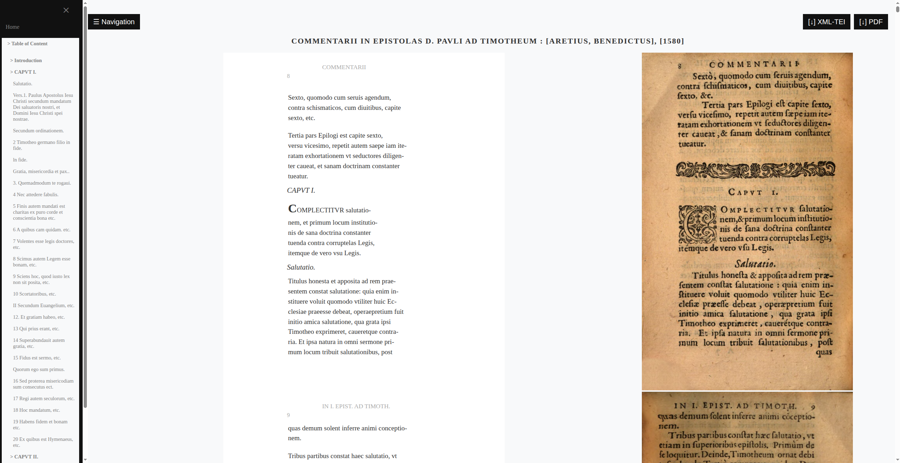
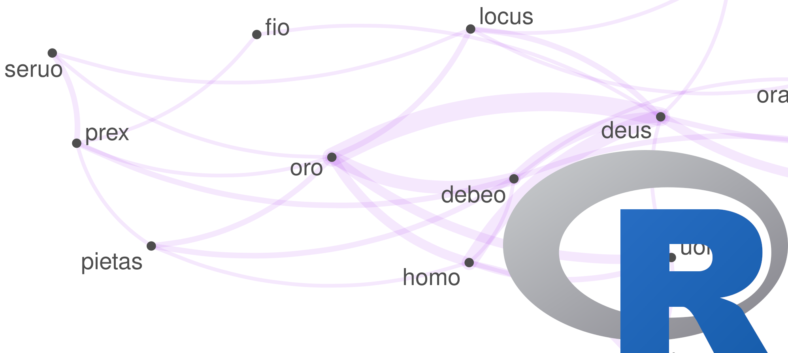
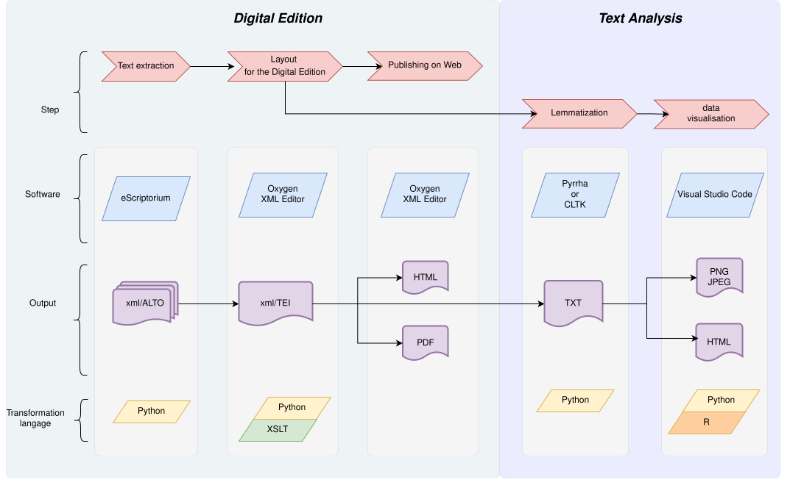

Digital Analysis
Welcome to the website for the project 16th Century Exegesis of Paul. Here you will find the workflow and script for the digital analysis of the text through co-occurrence networks and topic modeling. The results of the topic modeling will also be integrated, enabling a comparison of the epistles by verse (winter 2026).


